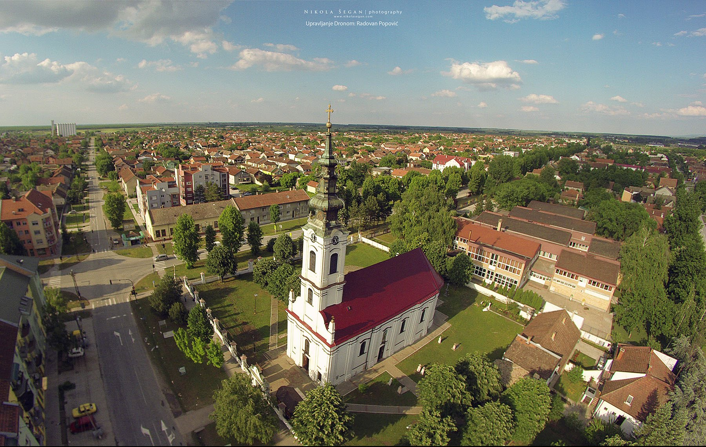

Dobro došli na sajt
Na ovom sajt možete saznati mnogo dodatni informacija o meni
Na ovom sajt možete saznati mnogo dodatni informacija o meni
Bačka Palanka je grad sa istoimenom opštinom koji se nalazi u Bačkoj, odnosno u autonomnoj pokrajini Vojvodini - R. Srbija. Ovaj grad se nalazi na na istočnoj obali rijeke Dunav, a njegov periferni južni dio je 500 m od Dunava.
Značenje imena grada Bačka Palanka je "grad u Bačkoj", iz razloga što je riječ "palanka" turskog porijekla, koja je odomaćila kod Srba i koja se koristi u srpskom jeziku sa istim značenjem.
Prethodni nazivi za ovo mjesto bili Palanka, Stara Palanka, Nova Palanka i Nemačka Palanka.
Više o ovom gradu možete pronaći na Wikipedia HR, Wikipedia ENG i Zvaničnu prezentaciju opštine Bačka Palanaka.
| Naziv znamenitosti | Kratak opis | Slika |
|---|---|---|
| Gradska vijećnica | / | 
|
| Glavna pješačka ulica | / |  |
| Katolička crkva | / | 
|
| Biblioteka "Veljko Petrović" | / |  |
| Sportsko-rekreativni centar "Tikvara" | / |  |
| Panorama grada | Panorama grada na kojoj je prikazana pravoslavna crkva koja je posvećena Svetom Jovanu Krstitelju |  |
| Stadion "Slavko Maletin - Vava" | Stadion na kojem FK Bačka igra svoje utakmice |  |